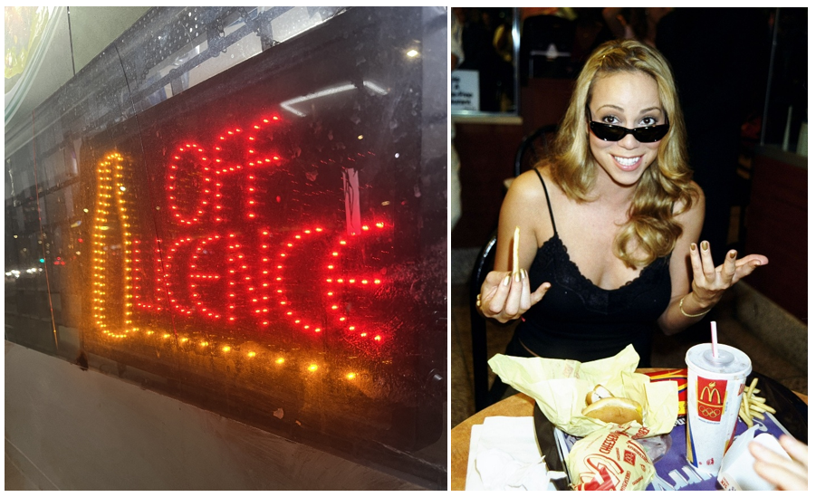

Butterkist: 100 years at the heart of the Movie theatres
Few people know that this iconic taste of the big screen is over 100 years old. Butterkist has perfected the balance of sweetness and crunch, with its toffee-flavoured popcorn ready for any occasion. The brand was first introduced in London by Hoke & Holburn with their revolutionary B-kist popcorn machine. I bought my first toffee-flavoured popcorn at a local off-licence called Londis and can testify that I never stopped buying it before entering a cinema. However, it is primarily sold within the UK, and my quest to see if international markets shared my manic appreciation for this unrivalled cinematic snack was quickly halted.
Which brings me to my next point, that is The Economist’s ‘The Big Mac index’. The Big Mac Index is a price index published in 1986 by The Economist as a cheerful way of measuring the purchasing power parity (PPP) between two currencies. PPP asserts that nominal exchange rates adjust so that identical goods will have the same price in different markets. The Big Mac in the index should remain the same in price across the globe and therefore examine the over or undervaluation of different currencies based on this assumption. In reality there are too many variables to consider, making prices vary wildly internationally, including geography. In January 2011, The Economist went so far as to take burgernomics against the Argentinian government, accusing them of manipulating inflation data.
Could Sarah Gailey’s Eat the Rich comic book thriller hold any relevance here? Can we eat our way to PPP equilibrium? If so, a “Butterkist index” would have been nice. After all, I refuse to believe that this cinematic legend could do any wrong.
CREDITS
- The Economist (2011). Lies, flame-grilled lies and statistics. [online] The Economist. Available at: https://www.economist.com/finance-and-economics/2011/01/27/lies-flame-grilled-lies-and-statistics [Accessed 15 Feb. 2026].
- CFA Institute (2024). 2025 CFA Program Curriculum Level I Box Set. John Wiley & Sons.